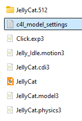
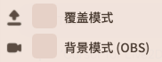
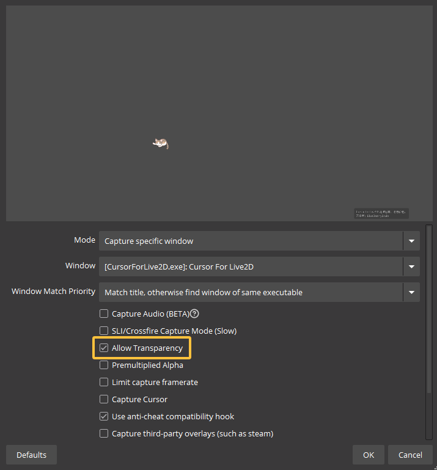
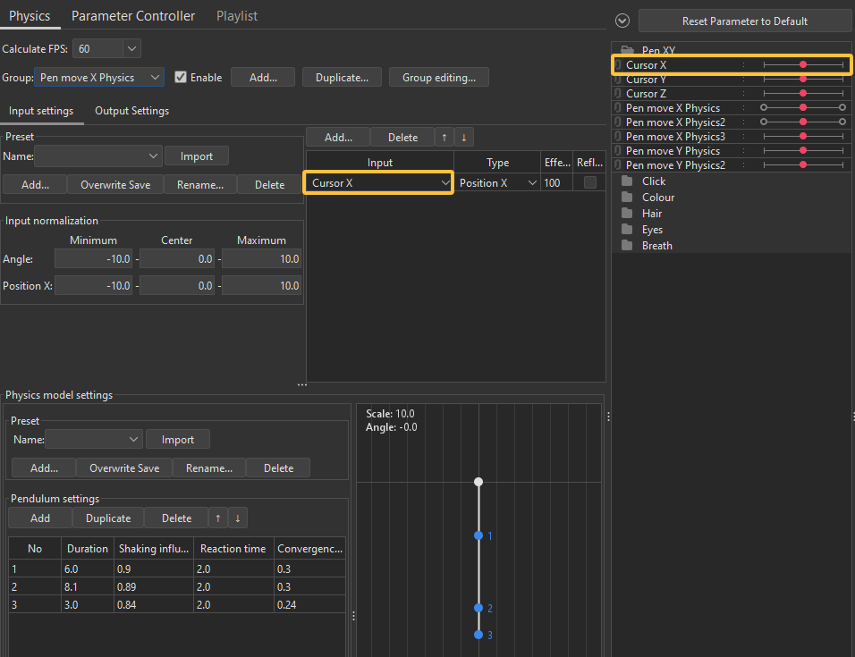
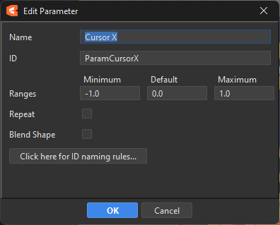

01
加载模型
点击“浏览文件夹加载模型”，或把 .model3.json 文件拖放到窗口中。

User Manual · For Modellers
00 · OVERVIEW
本手册侧重 Live2D 模型制作与参数配置，并非 Live2D 入门教程。建议先掌握 Cubism 的参数、ArtMesh、顶点和表情导出等基础操作。
如果只需要使用现成模型，可以优先查看应用的简洁介绍视频；本页更适合作为详细设置参考。
01 · MODEL IMPORT
加载完整模型文件夹，或直接将文件夹内的 .model3.json 文件拖入控制面板，即可完成加载。
点击“浏览文件夹加载模型”，或把 .model3.json 文件拖放到窗口中。
选择包含模型纹理、物理、动作及 .model3.json 的根目录。

点击“保存模型设置”后，模型文件夹会生成 c4l_model_settings 设置文件。它可以和模型一起打包，也可以单独发送，并通过“导入模型设置”恢复。


在控制面板中右键单击模型选项，然后选择“重新加载”，无需删除后重新导入。

02 · MODEL SETTINGS
模型的缩放、物理增益与锚点共同决定跟踪时的视觉效果。建议按以下顺序完成配置。
缩放会以当前选择的锚点为中心进行。

物理增益控制模型物理效果的幅度。数值越高，鼠标移动带来的物理反馈越明显。

参数识别规则
软件会自动识别模型的横向和纵向物理输入。参数 ID 的末尾必须是大写 X 或 Y；其后也可以只包含数字。
ParamCursorX以大写 X 结尾ParamAngleY2Y 后只有数字ParamCursorx使用了小写 xParambody末尾无 X / Y关键设置
点击“点击选择”，可以直接在模型上选择任意 ArtMesh 顶点作为锚点；也可以输入 ArtMesh ID 和顶点号码，通过列表定位后确认。
顶点号码可在 Live2D Cubism 的左上方“显示”菜单中找到，具体见Cubism“显示”菜单说明 ↗

03 · EXPRESSIONS
先在 Live2D Viewer 中完成表情设置，将表情导出为 exp3.json 文件并放入模型文件夹。绑定页面会自动读取模型中的全部表情文件。
具体步骤请参考 Live2D Cubism 官方手册中的“创建和导出表情”说明 ↗。

点击绑定按钮，再按下希望使用的键盘或鼠标按键。点击“+ 绑定”可为同一表情增加多个触发键，例如同时绑定鼠标左键和右键。
按住：按下时触发，松开后恢复默认，适合鼠标点击。
切换：按一次触发，再按一次取消，适合造型切换。

数值为 0 时瞬间切换；秒数越高，过渡越慢。该设置会影响所有按键表情。


表情面板关闭后，可从控制面板的“表情设置”再次打开。

表情较多时，可在快速触发列表中集中查看并测试。

勾选并选择待机动画；模型文件夹内需包含 motion3.json 文件。
04 · SHORTCUTS
左键点击快捷键按钮后，按下新的组合键即可更改默认设置。快捷键配置可以单独保存，便于迁移或备份。

核心快捷键
保存前确认快捷键没有与常用软件或系统热键冲突。
05 · DISPLAY MODES
两种显示模式适用于不同场景：覆盖模式让模型直接显示在桌面最上层，背景模式则便于通过 OBS 捕捉模型画面。

隐藏应用界面，仅显示模型，并使模型窗口保持置顶。适合让模型直接覆盖在其他桌面内容之上。
让模型在后台运行，不会遮挡你的屏幕操作；OBS 仍可捕捉模型，因此观众可以看到，适合直播或视频录制。
OBS · WINDOW CAPTURE
在 OBS 的窗口捕获属性中勾选 Allow Transparency，即可隐藏背景并以透明背景捕捉模型。

06 · MODELLER TUTORIAL
以下流程分享一种互动鼠标模型的制作思路，重点是让锚点在点击动作前后保持正确的位置。
本节是与 Cursor for Live2D 相关的制作经验分享，不覆盖 Cubism 的基础建模操作。
Cubism · 点击状态
参数 ID 可以自由命名。示例中参数轴 1 表示笔尖落下，0 表示鼠标漂浮。动作完成后，在笔尖落下的位置右键添加参考线。

Cubism · 默认状态
回到参数轴 0 的鼠标漂浮状态，启用编辑 ArtMesh，将一个顶点放到刚才的参考线位置。


Cursor for Live2D
导出后将模型导入应用。在 Cubism 的“显示 → 显示图形网格顶点号码”中确认 ArtMesh ID 与顶点号码，或使用“点击选择”直接在模型上选择。


完成
锚点选择完成后，模型会以该顶点为基准跟踪指针箭头的尖端。
Cubism · 物理设置
模型的物理输入可参考下图进行设置。Cursor X 是一个仅用于物理输入的空参数，参数 ID 为 ParamCursorX。由于 ID 以大写 X 结尾，软件会自动识别；Y 轴的设置方式相同。


07 · FINAL CHECK
将模型交付给其他用户之前，用这份清单快速确认必要文件和设置。
.model3.json、纹理、物理和其他依赖文件位于同一模型目录。
模型目录中包含最新的 c4l_model_settings。
物理输入参数以大写 X / Y 或其后数字结尾。
按 F 测试，模型能以预期顶点对准指针尖端。
逐个测试绑定、触发模式、淡入淡出和待机动画。